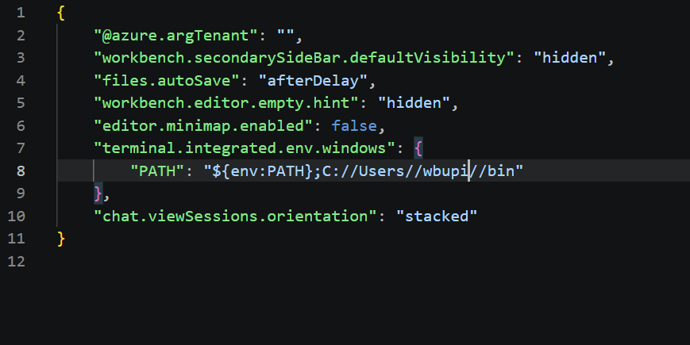

12 mAI Factory Desktop Setup — Prerequisites
13 mAI Factory Setup
These instructions walk you through setting up a local instance (Desktop Access) of mAI Factory, which gives you access to the company’s internal models — ranging from GPT-4o mini to Claude Sonnet 5.
mAI Factory provides a single, secure gateway to a growing catalog of internal and third-party AI models, so teams can experiment and build without managing separate accounts, keys, or billing for each provider. Setting up a local instance lets you integrate these models directly into tools like survey-scribe for tasks such as document parsing, extraction, and classification.
For more information on mAI Factory, visit: https://ai.worldbankgroup.org/maifactory/
13.1 Overview
Setting up Desktop Access to mAI Factory involves three stages:
- Prerequisites (this chapter) — install the required tools on your machine
- On-Boarding Request — request access to the ITSAI platform
- Environment Setup and Configuration — configure credentials and verify your first API call
If you plan to call mAI Factory from an R/Shiny app deployed on Posit Connect (rather than from a local Python script), see the separate R/Shiny integration guide instead.
13.2 Understand the Two Credentials
There are two separate credentials involved in this setup. It is important not to confuse them:
- Artifactory identity token (username + reference token generated in JFrog) — used only to authenticate to the World Bank’s internal package repository so you can download the
itsai-platformSDK. It is not used to call the AI models. - mAI Factory access token — this is what actually authenticates your calls to the AI models. For Desktop Access, there is no static key to generate; it comes from an interactive browser login handled by the SDK itself (covered in Environment Setup).
13.3 Prerequisites
Before starting the setup steps in this guide, make sure the following are in place.
13.3.1 Python 3.12
Install Python, or update your existing installation, to a version up to and including 3.12. You can download the latest compatible installer from the official Python website and verify your version with:
python --versionpython3 --version13.3.2 Connected to the World Bank GlobalProtect VPN
You must be connected to the World Bank GlobalProtect VPN, on the US East gateway.
- If you are in the DC office and connected to the bluemarlin WiFi network, you do not need to worry about which region the gateway is on — as long as the GlobalProtect client shows the connection status as “Connected”, you’re good to go.
- If you are outside the DC office (or not on bluemarlin), connect to GlobalProtect and select the US East gateway explicitly.
13.3.3 Install uv
uv is used to manage the Python environment and dependencies for this project.
Visit the UV releases page.
Download the latest
uv-x86_64-pc-windows-msvc.zipfile.Create a
binfolder in your home directory:C:\Users\<wbupi>\binExtract the contents of the zip file and move them into the
binfolder you just created.Configure VS Code so its integrated terminal can find
uvonPATH. Open the VS Code settings (JSON) file —Ctrl+Shift+P→ Preferences: Open User Settings (JSON) — and add the following:{ "terminal.integrated.env.windows": { "PATH": "${env:PATH};C://Users//wbupi//bin" } }

Replace wbupi with your own Windows username, then restart any open terminals in VS Code for the change to take effect.
The recommended way to install uv on macOS is via Homebrew:
brew install uvIf Homebrew itself is not installed, install it first from https://brew.sh, then run the command above.
Alternative — standalone installer (if you prefer not to use Homebrew):
curl -LsSf https://astral.sh/uv/install.sh | shVerify the installation by opening a new terminal window and running:
uv --versionYou should see a version number returned.
13.4 Next Steps
Once the prerequisites above are in place:
- Submit your ITSAI Platform On-Boarding Request if you have not already done so.
- After approval, continue with Environment Setup and Configuration to configure credentials, install the SDK, and verify your first API call.